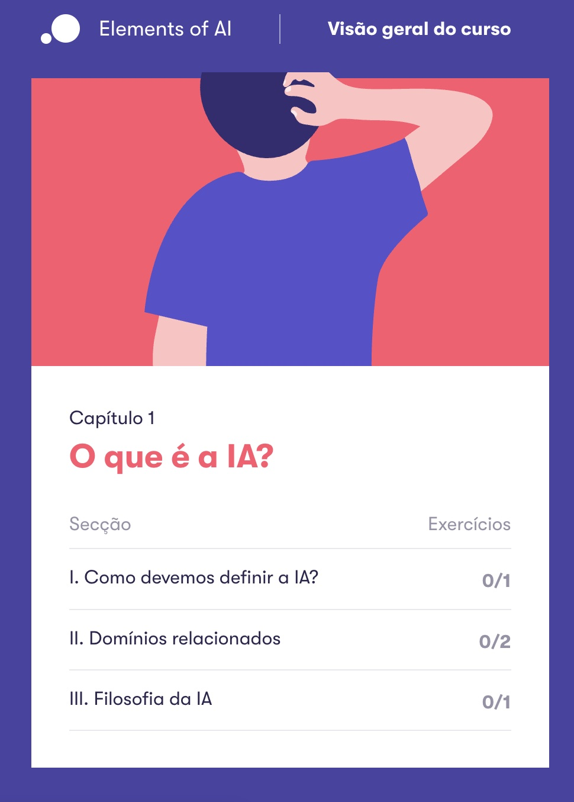

Entender a IA antes de falar mal dela
Entender antes de julgar
“Reclamar e falar mal de uma tecnologia nova é fácil. Difícil é parar para entender o que ela realmente faz.”
Eu estou obcecada por inteligência artificial.
Ela tem me ajudado muito a colocar minhas ideias no papel, estruturar projetos e automatizar processos que antes dependiam de um tanto de trabalho manual.
Por isso, o Elements of AI entrou nesta lista.
O curso é gratuito, tem versão em português e começa pelas perguntas mais básicas, como o que pode ou não ser chamado de inteligência artificial. Depois passa por resolução de problemas, aplicações reais, aprendizagem de máquina, redes neurais e impactos sociais.
Não quero aprender apenas qual botão apertar em cada ferramenta.
Quero entender um pouco melhor o que existe por trás delas, até para conseguir usar tudo isso com mais consciência e menos deslumbramento.
↗ Conhecer o curso